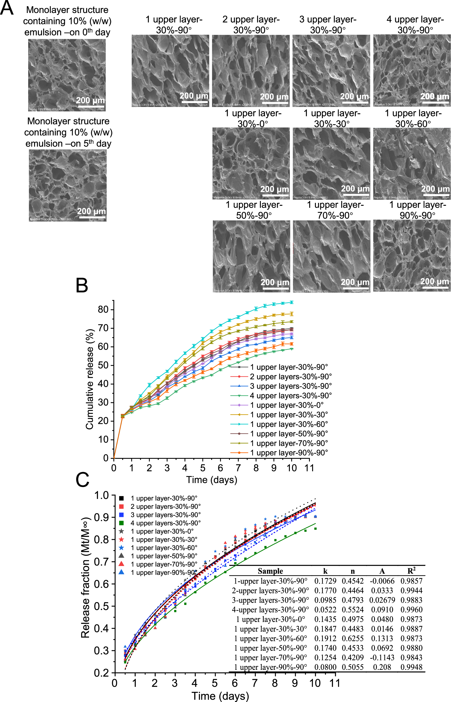
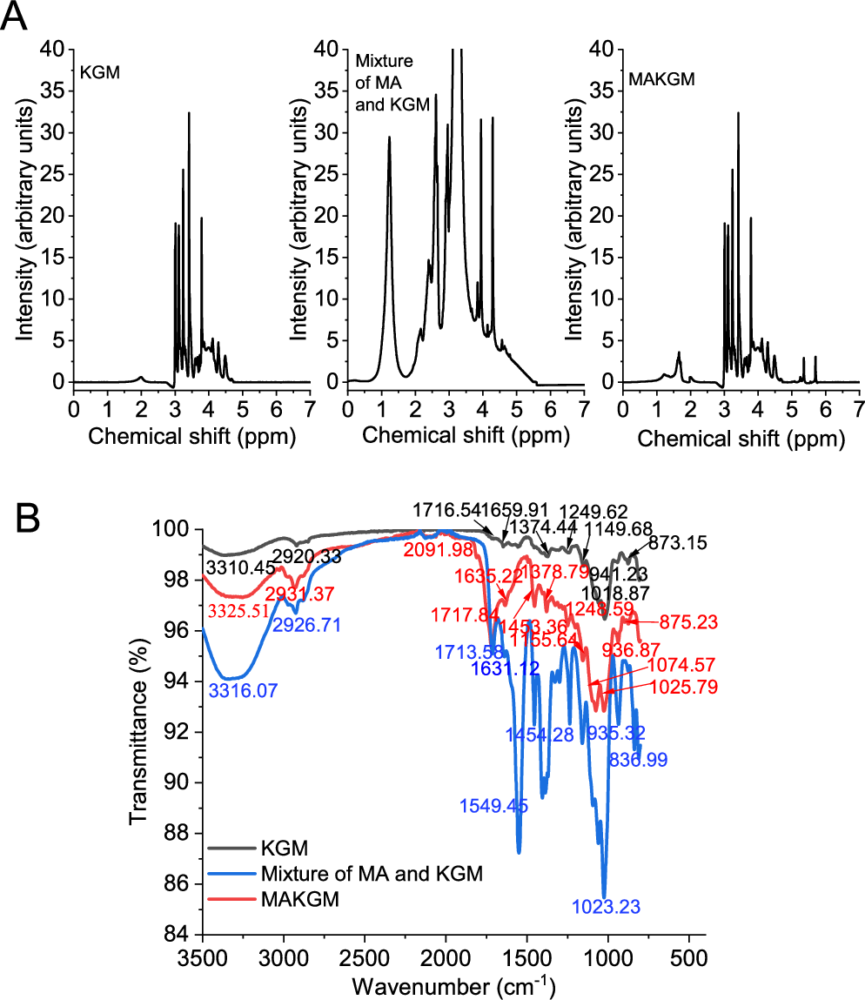
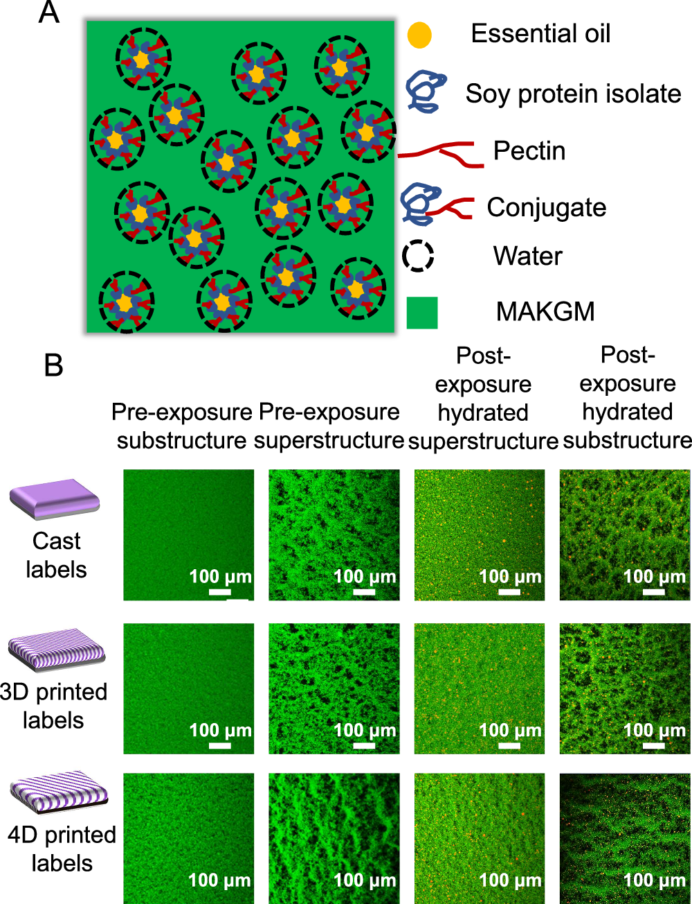
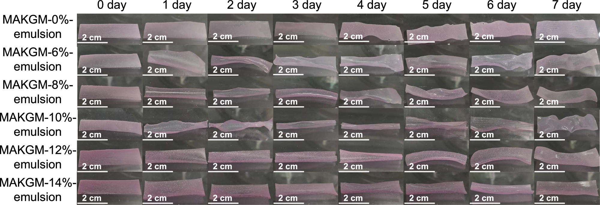
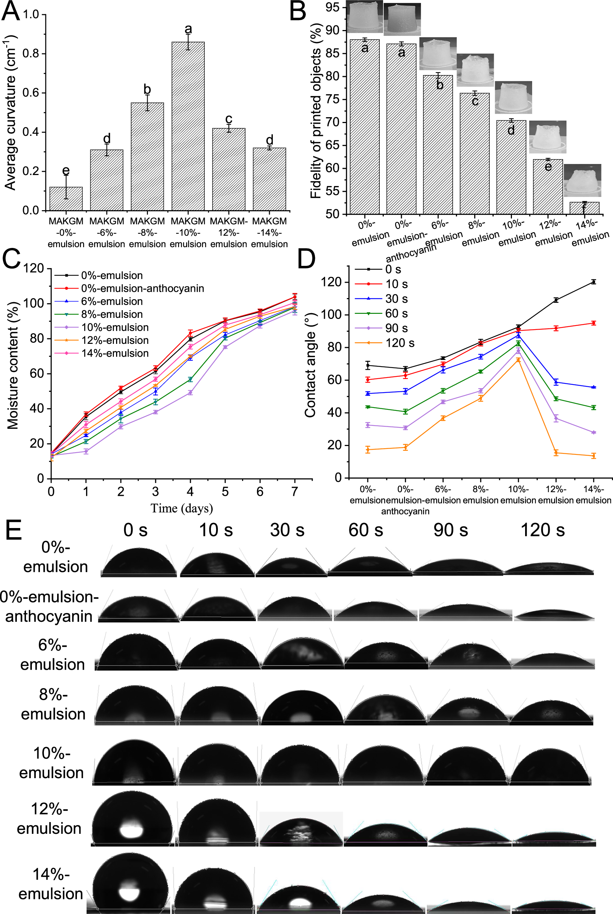
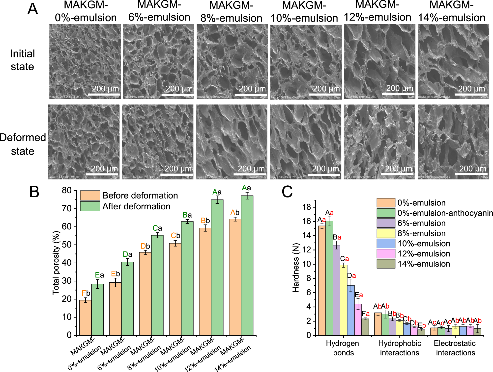
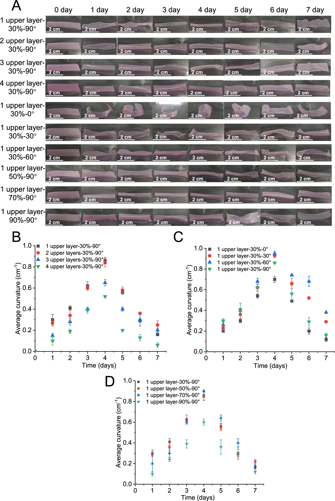
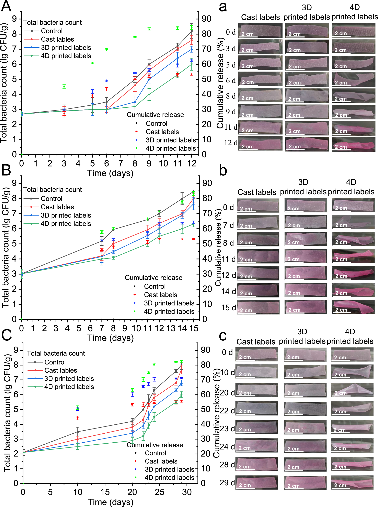
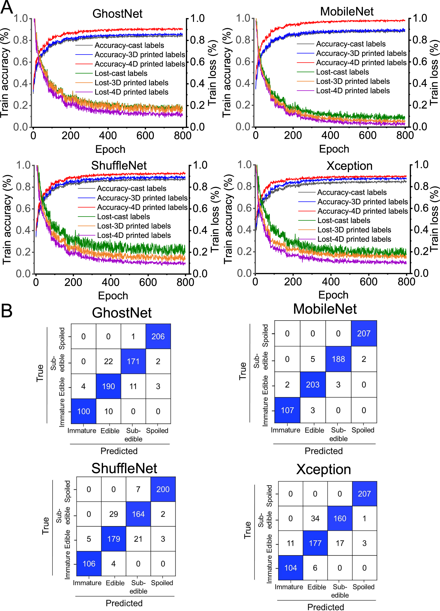

全文精读
结合机器学习的4D打印变形标签用于呼吸跃变型水果监测与保鲜
4D printed deformation labels with machine learning for monitoring and preservation of respiring climacteric fruits
解读更新 2026-10-20 09:40 · 依据论文全文整理
全文精读已完成，文章版正在逐步升级。现有内容可继续阅读。
本文围绕水果品质转折难以直观识别的问题，将二氧化碳响应变色、湿度驱动变形及精油释放集成到双层4D打印标签中，并比较浇铸、3D与4D标签及四种轻量分类网络。结果支持材料配方与几何设计共同调控变形和释放，MobileNet组合表现最佳，但正文准确率与矩阵重算略有差异。解读：其价值在于感知结构与算法协同设计，而非直接提供设备智能运维方案。
研究问题
作者针对单一颜色标签难以清楚区分水果品质转折、传统保鲜措施缺乏实时反馈的问题，尝试同时实现品质监测与主动保鲜。关键不只是提高分类准确率，还包括解释环境变化如何转化为可见形变，以及形变能否进一步改善精油释放。
方法与路线
研究以MAKGM构建双层标签，配置显色剂及大蒜精油乳液，分别改变上层层数、填充率和交叉角。通过显微结构、含水量、接触角与释放动力学分析响应机制，再结合水果品质分级及四种轻量网络比较监测效果，设置浇铸与3D打印对照。
创新与比较
解读：相对本文比较的单纯变色标签，主要增量是将形状作为额外识别信息，并利用形变引起的微结构变化促进保鲜剂释放。材料、结构和分类模型由此形成协同设计关系；现有资料不支持将其表述为首次提出4D打印或首次使用机器学习监测食品。
证据与发现
作者选定10%乳液及单层、30%填充率、60°交叉角方案；该几何方案第10天累计释放量较四层对照高42.32%。MobileNet最佳，正文报告97.90%，图9计数重算约97.92%。较高精油释放伴随后期较低菌落总数，支持保鲜优势。
局限与边界
式(6)缺A定义，影响复现。图3配方矛盾；图5C硬度轴与作用力解释不一致；峰值日期概括有例外；n低于正文下限，影响机制判断。方法以凝胶强度差间接表征作用力。另需专用包装空间，仅验证三类水果，补充资料未核验。 原文核对： 图3原页图注明写“The lower structure of all labels contained 10% (w/w) emulsion”，但同图行标签明确为0%、6%、8%、10%、12%、14%乳液，正文也讨论不同含量。这是原页配方描述不一致，而非提取错误；影响各实验组下层配方的准确复现，不能将所有组解释为10%。未发现公式缺失。； 图5C原页纵轴为“Hardness (N)”，而横轴、图注及正文均将其解释为氢键、疏水及静电相互作用。原页未在该图说明硬度读数与分子作用力的换算或对应关系，存在指标标注不一致；影响纵轴物理量及分子作用力降幅的直接解释，不应自行改写轴名或单位。； 图6C中0°组平均曲率在约第3天达峰，第4天已下降；与P6正文笼统表述“the labels reached their maximum curvature on 4th day”不完全一致。原图数据点及图例可辨，非提取错误；影响“全部几何设计均在第4天达峰”的概括，不影响几何参数改变变形过程的总体观察。； 图7C原页参数表中“1 upper layer-70%-90°”组扩散指数n=0.4209，低于P8正文所称全部样本“0.43≤n<0.85”的下限。原表数值清晰，属于原文范围表述与表格不一致，非提取错误。该组不能直接套用作者所写区间来支持全部样本均为非Fick扩散的结论；不能擅自改动n或补造模型公式。； 式(6)原页含加和项A，但紧随公式的变量说明仅解释Mₜ/M∞、k和n，未定义A的含义、单位或处理方式。公式本身完整；缺失的是参数说明，影响释放动力学模型的解释与复现，不能自行认定A的物理意义。
方向关联
解读：与智能运维的联系主要是方法迁移，即以环境响应结构提供多维状态信息，再由视觉模型识别状态转折；并非已经验证设备故障预警。对结构设计与可靠性研究，更直接的启示是响应幅度、网络完整性和功能释放之间存在需要联合优化的权衡。
后续研究建议
建议：先澄清公式参数、配方及指标定义，再按独立包装和采集批次隔离训练测试，并以人工复核检验模型辅助清洗标签的可靠性。随后检验跨包装、光照与储藏条件的性能，并结合作者提出的自动供料、输送及质控需求评估规模化可行性。
阅读建议
推荐作为响应结构与视觉识别协同设计的跨领域案例阅读，重点关注配方—几何—变形—释放证据链；若目标是设备故障诊断或剩余寿命预测，则不宜列为核心方向文献。
原图未改动。以下图注来自标注的来源，不据此补写摘要未报告的实验结论。
已取得的论文原图


原文图注与出处
A SEM images (200 ×) of 4D printed labels after 5 days of treatment at 25 °C and 93% relative humidity. B Cumulative release of essential oil included in 4D printed labels at 25 °C and 93% relative humidity. C The result of Ritger-Peppas model fitting. All data in Fig. 7B and C are mean ± S.D. n = 3 independent samples per group. Source data are provided as a Source Data file.
Teng, Xiuxiu et al.
原文图页 · CC BY 4.0



原文图注与出处
A Schematic diagram of the physical states of each component in the essential oil-loaded printing ink. B CLSM spectra (400 ×) of the upper and lower structures of cast, 3D printed, and 4D printed labels under different conditions. n = 3 independent samples per group.
Teng, Xiuxiu et al.
原文图页 · CC BY 4.0

原文图注与出处
All tests were conducted under controlled conditions of 93% relative humidity and 25 °C. The lower structure of all labels contained 10% (w/w) emulsion and 0.08% (w/v) riboflavin, while the upper structure consisted of 0.2% (w/v) color developer and 0.08% (w/v) riboflavin. The infill ratio was set to 100% for the lower structure and 30% for the upper structure. The filament intersection angle was fixed at 60°. MAKGM is konjac glucomannan grafted with methacrylic anhydride. n = 3 independent samples per group.
Teng, Xiuxiu et al.
原文图页 · CC BY 4.0已取得的论文原图


原文图注与出处
A Average curvature of 4D printed labels with the maximum deformation as shown in Fig. 3 . B Fidelity of printing inks with different formulations. C Changes in moisture content of the single-layer structure with different formulations. D, E Contact angle of the single-layer structure with different formulations. MAKGM is konjac glucomannan grafted with methacrylic anhydride. All data in Fig. 4A–D are mean ± S.D. n = 5 independent samples per group for contact angle measurements, and n = 3 independent samples per group for all other tests. Different letters indicate statistically significant differences between samples ( ρ < 0.05). Source data are provided as a Source Data file.
Teng, Xiuxiu et al.
原文图页 · CC BY 4.0

原文图注与出处
A SEM images (200 ×) of 4D printed labels with the maximum deformation as shown in Fig. 3 . B Total porosity of the lower structure of printed labels without deformation and with the maximum deformation. C Intermolecular force of printing inks with different formulations after light treatment. MAKGM is konjac glucomannan grafted with methacrylic anhydride. All data in Fig. 5B, C are mean ± S.D. n = 3 independent samples per group. Different capital letters indicate statistically significant differences ( ρ < 0.05) between samples for a given measured index, while different lowercase letters denote significant differences ( ρ < 0.05) within the same sample across different measured indices. Source data are provided as a Source Data file.
Teng, Xiuxiu et al.
原文图页 · CC BY 4.0

原文图注与出处
A Shape changes of 4D printed labels at 25 °C and 93% relative humidity. B Average curvature of 4D printed labels with printing layer number of the upper structure from 1 to 4. C Average curvature of 4D printed labels with filament intersection angles from 0° to 90°. D Average curvature of 4D printed labels with infill ratios from 30% to 90%. All data in Fig. 6B–D are mean ± S.D. n = 3 independent samples per group. Source data are provided as a Source Data file.
Teng, Xiuxiu et al.
原文图页 · CC BY 4.0

原文图注与出处
Microbial changes in fruits and essential oil release from labels during storage at 25 °C: A kiwifruits, B green mangoes, and C persimmons. The color and shape changes of a kiwi fruits, b green mangoes, and c persimmons at the turning point of fruit quality changes. All data in Fig. 8A–C are mean ± S.D. n = 3 independent samples per group. Source data are provided as a Source Data file.
Teng, Xiuxiu et al.
原文图页 · CC BY 4.0已取得的论文原图


原文图注与出处
A The training results of four lightweight DCNN models combined with cast, 3D printed, and 4D printed labels. B The prediction performance of four lightweight DCNN models combined with 4D printed labels. Source data are provided as a Source Data file. Code is available in the Supplementary Code package.
Teng, Xiuxiu et al.
原文图页 · CC BY 4.0查看公开摘要
4D printed labels that change color and shape were developed to achieve the dual functions of quality assessment and maintenance of respiring climacteric fruits. The effect of addition of essential oil emulsion and different geometric structures on deformation as well as the corresponding mechanisms were explored. Cast, 3D printed, and 4D printed labels were compared based on their responses to fruit quality and compatibility with machine learning. The addition of emulsion significantly affected the degree of deformation by altering the printing fidelity, hydrophilicity, and flexibility of the network structure. Geometric designs (Including printing layers, filament intersection angles, and infill ratios) changed both the direction and degree of deformation. Unlike cast and 3D printed labels, 4D printed labels simultaneously changed color and shape in response to variations in humidity and carbon dioxide levels in the package, enabling more accurate visual monitoring the turning points of fruit quality. The MobileNet model achieved recognition accuracy of 97% for 4D printed labels, which played an active role in achieving intelligent warnings. Additionally, deformation along with microstructure destruction positively impacted the controlled release of essential oils through a non-Fickian mechanism, resulting in a better preservation effect.